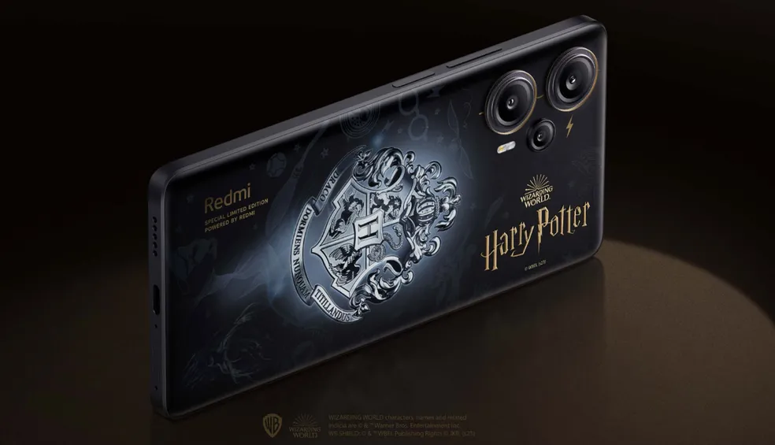
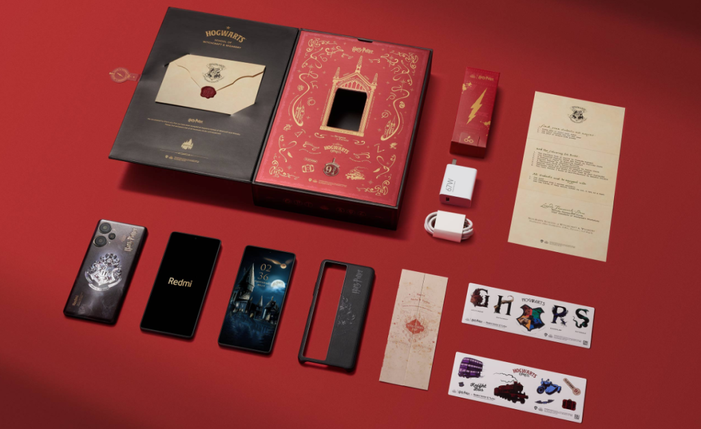

Xiaomi lança edição limitada de celular inspirada em Harry Potter
A Xiaomi, uma das principais fabricantes de smartphones do mundo, anunciou recentemente uma edição limitada e especial do Redmi Note 12 Turbo inspirada na saga de Harry Potter. O celular é cheio de referências emblemáticas para os fãs, apresentando a superfície traseira com os principais símbolos do universo mágico, incluindo uma representação do rosto do personagem principal da história.
O produto tem um preço de 2.399 yuans na China (cerca de R$ 1,8 mil) em conversão direta e sem impostos. A ficha técnica do novo celular premium é idêntica à do Redmi Note 12 Turbo já lançado. Ele possui 12 GB de memória RAM, 256 GB de armazenamento interno, chip Snapdragon 7 Plus Gen 2 da Qualcomm e uma bateria de 5.000 mAh.
A parte traseira do aparelho apresenta o emblema da escola de magia de Hogwarts, juntamente com o logotipo da franquia em cores brilhantes. Além disso, a Xiaomi utilizou a configuração do módulo de câmera do Redmi Note 12 Turbo para inserir uma representação estilizada dos óculos icônicos do protagonista, juntamente com uma representação da cicatriz distintiva.
A edição especial de Harry Potter vem com uma caixa cheia de surpresas para os fãs, incluindo uma ferramenta para ejetar cartões SIM com o icônico símbolo da estação 9¾, uma réplica do Mapa do Maroto e uma carta de aceitação para a escola de magia e bruxaria. Vários adesivos e uma capinha personalizada também fazem parte do pacote.

Os admiradores devem ficar encantados por outros detalhes encontrados dentro da caixa da edição especial. Incluído é uma ferramenta para ejetar cartões SIM com o icônico símbolo da estação 9¾, bem como uma réplica do Mapa do Maroto e uma carta de aceitação para a escola de magia e bruxaria. Vários adesivos e uma capinha personalizada também fazem parte do pacote.
Embora a Xiaomi não tenha divulgado uma previsão para o lançamento da edição especial de Harry Potter no Brasil, os fãs da saga estão ansiosos para adquirir o smartphone. Com a possibilidade de personalizar o sistema Android de acordo com suas preferências e a inclusão de elementos tão icônicos da saga, o novo celular premium deve ser um grande sucesso entre os amantes de tecnologia e fãs de Harry Potter.